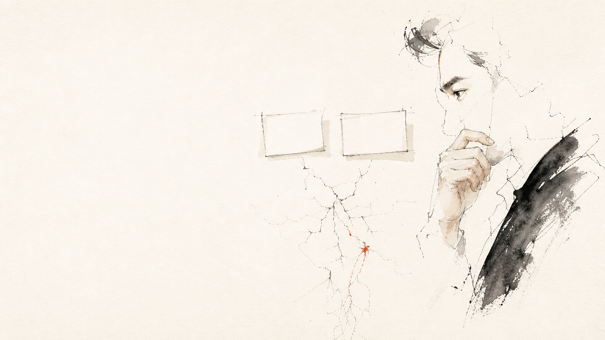
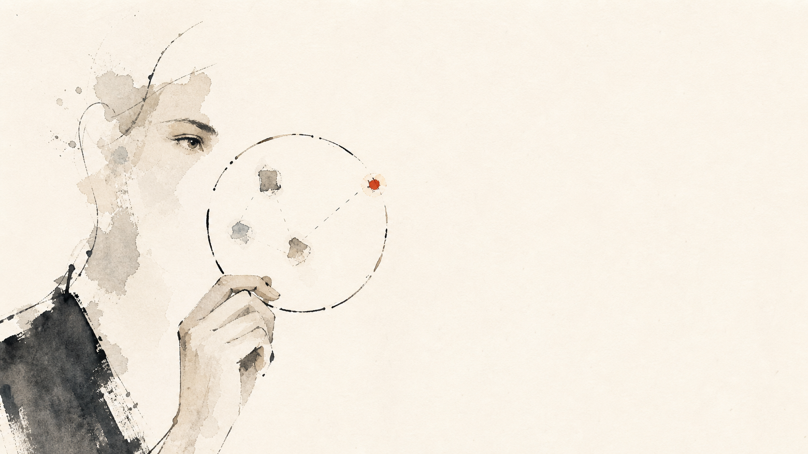
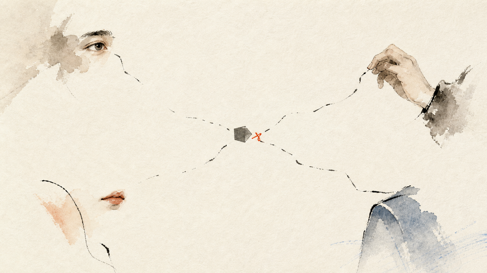
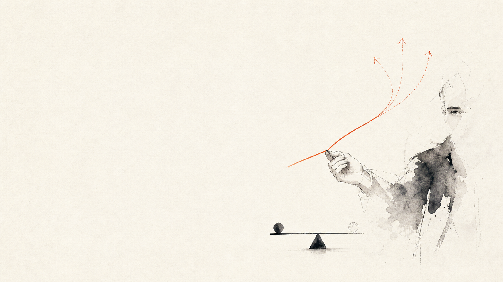

能力照明區
擅長 → 看得見 → 會處理 → 願意投入 → 轉換率通常已不差

報價第二講 · 價值
用七段 QBQ 找支點、算出一年期可歸因價值
中小企業不是沒有行動
直覺對策：增加廣告預算。
直覺對策：加薪、聚餐、福利。
直覺對策：折價券與促銷。
看到症狀就開藥，可能暫時止痛，卻沒有改變根本支點。
老闆的能力照明區
擅長 → 看得見 → 會處理 → 願意投入 → 轉換率通常已不差
不熟悉／不擅長／不喜歡 → 延後、合理化 → 可能成為低轉換支點
企業的瓶頸，經常不在老闆最努力的地方，而在他最不想走進去的地方。

AI 不一定正確
中立不是 AI 的性格，而是一套由 Harness 強制執行的程序。
為什麼不能只談商業模式
價值、客群、收入、成本與交付。
能力、人格、慣性與決策方式。
文化、權責、人力、錢、時間與外部槓桿。
最佳策略不只要「理論正確」，還必須這家公司做得動。
從資訊走到可計算價值
前三段找到真正問題，中間兩段確認做不做得到，第六段形成安全策略，第七段才計算價值。

望聞問切，先不站隊
老闆、主管、員工、經銷商、客戶與潛在消費者：每個位置只看得到企業的一部分。
問題不是越多越專業
MECE 收斂：價值主張／流量品質／轉換流程／業務承接
分類不是整理版面，而是避免把不同層級的症狀誤當成五個獨立問題。
症狀最大聲，不代表槓桿最大
景氣、法規、競爭者、平台政策。
流程、能力、工具、產品與管理。
投入少量資源，能推動多個下游結果。
顧問不是替症狀找對策，而是找出值得被改變的因果節點。
不要優化最順的地方
高轉換節點繼續提升，邊際報酬可能有限。
其他節點不變，最終成交與貢獻毛利接近翻倍。
低轉換率只是候選，不是答案
顧問不是代替老闆決定，而是照亮企業長期沒看見的低轉換節點。
策略也必須有安全骨架
損失或副作用到哪裡必須暫停？
判斷錯誤時，如何回到安全狀態？
誰在何時依什麼數據核准下一步？
改善支點之後，企業真正多得到多少？
營業額不等於價值；省下的時間也只有在能被重新利用時，才產生經濟價值。

真正的報價，不只看投入成本
客戶拒絕的通常不是 100 萬，而是不確定這 100 萬會換回什麼。
三種生意，共用同一條價值證據鏈
症狀：工程延期
支點：需求變更與核准
價值：少重工、早營運、降延誤損失
症狀：廣告無效
支點：7% 詢問轉換
價值：新增成交貢獻毛利
症狀：客人不回購
支點：療程後追蹤
價值：回購毛利與空檔下降
第一講算成本底線；第二講算可歸因價值。第三講，把兩者合成價格走廊。
只留下兩個最能複用的核心工具
整合360°蒐證、MECE變因、因果支點、轉換率與三情境ROI。
人類負責：判斷因果、支點及企業是否承接得住。
讀取訪談、營運數據與資源限制，重跑假設分離、支點候選、轉換模擬與可歸因價值。
護欄：不把營收直接當價值，不越過人工核准。
第二講算出「客戶多得到多少」；第三講把它與成本合成價格走廊。